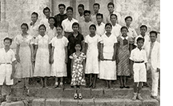
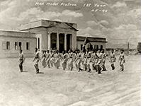

The Early Years
In June 1933, Holy Angel Academy (HAA) opened its doors to a modest group of 78 high school students in the Holy Rosary Parish Convent. It was initiated through the joint efforts of the late Don Juan D. Nepomuceno, a known philanthropist/prominent businessman and Fr. Pedro P. Santos, then parish priest of the town of Angeles and later Archbishop of Nueva Caceres. Its primary purpose was to offer Catholic education in the secondary level, which was the felt need of the community at that time. It was organized as a non-stock, non-profit corporation oriented towards service to the community.

The founders employed the able leadership of Ricardo V. Flores, an energetic educator from Pagsanjan, Laguna whose efforts, commitment and perseverance brought forth in two months the opening of a complete secondary school and the issuance of government recognition in February 1934. Consequently, the Holy Angel Academy (HAA) became the first Catholic co-educational high school run by laypersons with the First Friday devotion to the Sacred Heart of Jesus, as its initial signature landmark. By 1940, HAA moved from the Parish Convent to its first building (present Don Juan D. Nepomuceno Building or DJDN Building) to accommodate its expanding enrollment.
When World War II broke out, classes were suspended and resumed only in 1945. On May 8, 1947 the Academy was given new government recognition for its General Secondary Education Program. In school year 1947-48, the Evening High School Program started to provide educational opportunities for working students, particularly the employees in Clark Air Force Base. Likewise, the tertiary department was established with the 2-year Junior Normal College or Elementary Teacher's Certificate (ETC) as its initial program in response to the growing need for teachers in public schools. This program continued operating until 1963, when it was converted to a 4-year Normal College or the Bachelor of Science in Elementary Education (BEED) that was granted government recognition on February 11, 1955, this program continued operating until 1963, when it was converted to a 4-year Collegiate Normal Course of the Bachelor of Science in Elementary Education (BSEEd).

In 1948, the College of Commerce opened with a program, Bachelor of Science in Commerce whose government recognition was issued on December 3, 1951 or upon graduation of its first twenty three (23) students. In 1955, the Academy offered the 2-year Associate in Arts (also known as Preparatory Law Course) which was later converted into a 4-year Liberal Arts (or Bachelor of Arts) that was granted government recognition on May 18, 1960.